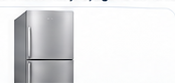
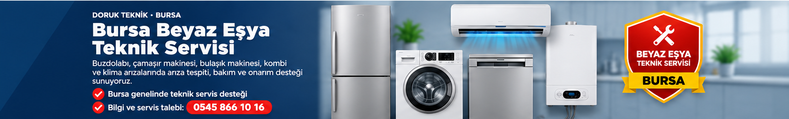
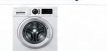
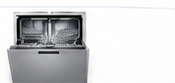
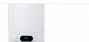
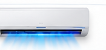

Buzdolabı Servisi
Soğutmama, ses yapma, su akıtma ve diğer arızalar.
Detaylı Bilgi ›
Beyaz eşyalarınızda karşılaştığınız sorunlar için teknik servis ve onarım desteği.

Soğutmama, ses yapma, su akıtma ve diğer arızalar.
Detaylı Bilgi ›
Çalışmama, su almama, sıkma yapmama ve diğer sorunlar.
Detaylı Bilgi ›
Yıkamama, su boşaltmama, kurutmama ve diğer arızalar.
Detaylı Bilgi ›
Isıtmama, su basıncı ve çalışma sorunları için kontrol.
Detaylı Bilgi ›
Soğutmama, ısıtmama, gaz ve bakım ihtiyaçları.
Detaylı Bilgi ›Marka ve modelinize göre servis imkânı hakkında bilgi alın.
Bursa genelindeki servis imkânı için ilçenizi ve mahallenizi telefonla paylaşabilirsiniz.
Buzdolabı, çamaşır makinesi, bulaşık makinesi, kombi ve klima için servis bilgisi alabilirsiniz.
Cihazın marka, model ve arıza bilgilerini paylaşarak ücret hakkında bilgi alabilirsiniz.
Güncel servis uygunluğunu öğrenmek için bizi arayabilirsiniz.
Doruk Teknik; buzdolabı, çamaşır makinesi, bulaşık makinesi, kombi ve klima servis ihtiyaçlarında Bursa'da teknik destek sunar. Cihazınızın markasını, modelini ve yaşadığınız sorunu paylaşarak servis süreci hakkında bilgi alabilirsiniz.
Servis ve onarım hakkında bilgi almak için Doruk Teknik'i arayın.